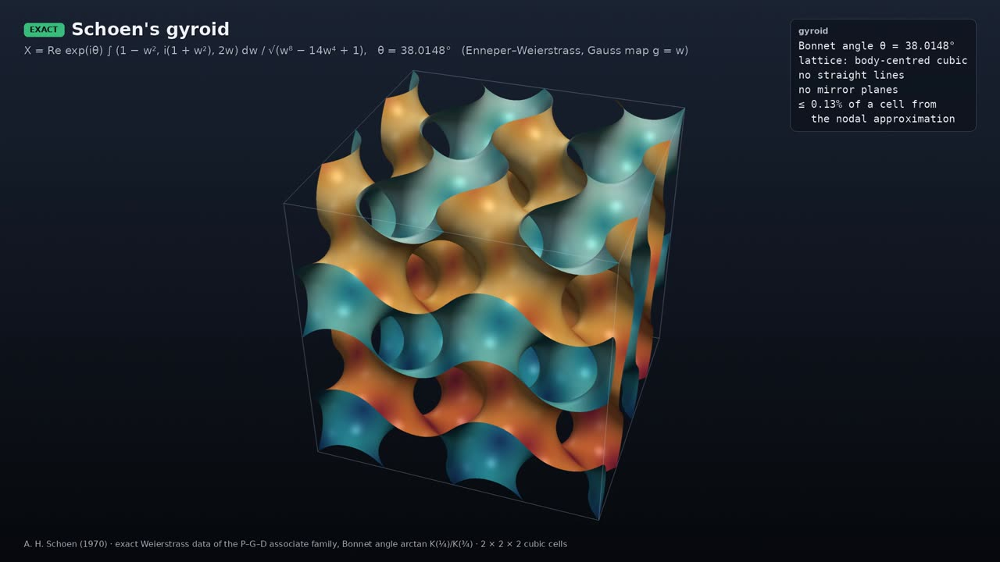

Schoen’s gyroid

EXACT animation · narrated
Why it is remarkable. Alan Schoen found the gyroid in 1970. It is an embedded, triply periodic minimal surface that divides space into two intertwined labyrinths which are mirror images of each other. It contains no straight lines and has no mirror planes. It belongs to the associate family of Schwarz’s P and D surfaces: there is a one-parameter way of bending D into P (and back) that keeps every length on the surface unchanged. D sits at angle 0°, P at 90°, and at the Bonnet angle θ = arctan(K(¼)/K(¾)) ≈ 38.01° (measured from D) the surface is the gyroid. Apart from P and D it is the only embedded member of the family (embeddedness proved by Große-Brauckmann and Wohlgemuth, 1996). Because the bending preserves lengths, it preserves Gaussian curvature at every point.
What the animation shows. First a 2×2×2 block of cubic cells, computed from the exact Weierstrass integral (not the popular trigonometric approximation sin x cos y + sin y cos z + sin z cos x = 0). Then one 17-tile patch bends continuously P → gyroid → D with its curvature colouring carried along unchanged, which is the visual proof that the bending is an isometry.
A. H. Schoen, NASA TN D-5541 (1970); H. A. Schwarz (P and D surfaces); O. Bonnet (associate family); K. Große-Brauckmann & M. Wohlgemuth, Calc. Var. 4 (1996).